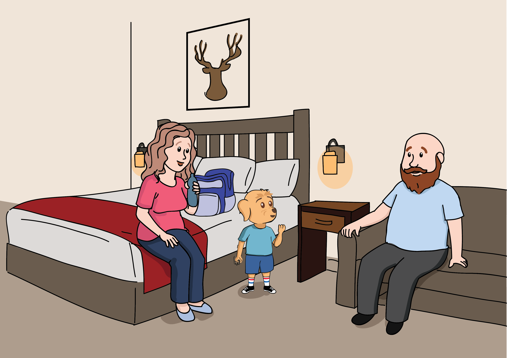

What The Pup
by Rich Williams

When What The Pup arrived at the World Zoo with Mommy and Daddy, he knew exactly where he wanted to go first, to see the pandas.
But Mommy and Daddy were hungry for breakfast. Their park package passes to the World Zoo included an all-you-can-eat brunch with breakfast quesadillas, tacos, burritos, queso, and nachos.
“I want brunch, can we please get brunch?” said What The Pup.
After a tasty Tex-Mex brunch, Mommy, Daddy, and What The Pup sat on a bench watching the other families scarf their breakfast tacos. Mommy grabbed her big blue backpack and darted off, saying, “I’ll be right back!”
She ducked into the bathroom but soon came out, heading away from What The Pup and Daddy, straight for the World Zoo’s fancy humongous gift shop. Out she came a few minutes later, a smile on her face, and a blue backpack on her back, but completely empty-handed!
Their first stop on their journey was The Penguins and Flamingos, among What The Pup’s favorite. That’s where they met Diego, the zookeeper for the birds. Diego asked What The Pup what he thought of the penguins and flamingos.
“Penguins wear tuxes, flamingos wear pink, but I’d like to go see the pandas, I think.”
What The Pup asked Diego, “Where are The Pandas?” Diego smiled, “Of course, the pandas are directly south of the penguins and flamingos.” Diego grabbed another bucket of shrimp and an ice cooler of fish and headed back toward the birds.
Between Mommy and Daddy, both holding What The Pup’s hands, the trio walked down the straight path where they could see the elephants and the aardvarks in the distance.
What The Pup looked forward. Then he looked backward, then he grabbed Daddy’s hand and the loop on Mommy’s big blue backpack and followed the pair until he could see the Elephants and the aardvarks, all with such long noses.
Their next stop on their trip was the elephants and aardvarks, classic zoo viewing at its finest. There, What The Pup met Henry, the safari zookeeper. That’s when Henry asked What The Pup how he was enjoying the World Zoo, especially the elephants and aardvarks.
“Elephants, aardvarks, peanuts, and ants. I’m pretty sure pandas eat green bamboo plants.”
What The Pup asked Henry, “Where are the pandas?” Henry smiled. “I see, the pandas are due west of the elephants and aardvarks.” Henry filled a red bucket up with clear water from the green hose and hauled it off, headed for a thirsty aardvark or elephant.
This made no sense to What The Pup. If the pandas were south of the birds, how could they be west of the safari?
What The Pup raced to catch up with Mommy and Daddy, half skipping, half dancing down the straight path until he caught up. Of course, they’d been keeping an eye on him, but he was looking straight ahead at the zebras and giraffes.
“Zebras are striped, and giraffe’s necks are long, but I have to go, or the pandas might be gone.”
Daddy put What The Pup on his back and reached for Mommy’s hand. The team strolled straight down the path toward the chimpanzee and orangutan habitats.
“Orangutans are loud, but chimpanzees are louder, when I find those pandas, I could not be prouder.”
At the end of the day, What The Pup said, “Oh man, when are we gonna see The Pandas?” But Mommy grabbed What the Pup’s hand, and they walked to the parking lot as the rain began to swell. The family team walked across the parking lot to the World Zoo Hotel, where they checked in to their room at the World Zoo’s resort.
What The Pup got in bed, and after Mommy and Daddy kissed him goodnight, he quickly fell asleep in the hotel bed. He was tired from all that walking.
Soon What The Pup woke up, not in his bed at all, but on the bench in the World Zoo. Mommy’s big blue backpack underneath his head like a pillow, he sat up and looked around. There was nobody at the World Zoo.
Suddenly, Mommy’s big blue backpack began to unzip, a little, then halfway, then all the way, and out popped a giant stuffed panda bear, far too big to ever fit in any bag, not to mention Mommy’s big blue backpack.

The panda took What The Pup’s hand and nodded as if he wanted What The Pup to follow him. They walked down the straight path until What The Pup began to hear the unmistakable sound of…monkeys. Oooh ooh, aaah aah.
Chuck was the loudest chimpanzee, third or fourth. “Pandas,” he said, “are found in the north.”
Ellie, the elephant, was sure she knew best. “Pandas,” she said, “are located west.”
Joey giraffe was quiet at least, but she knew the pandas were, “well, in the east.”
Penny, the penguin, had fish in her mouth, but, “All of those pandas are just to the south.”
Suddenly, What The Pup awoke to the morning sounds of the World Zoo, but he wasn’t in the World Zoo anymore, he was wrapped up snug in his hotel sheets and blankets. The zoo was waking up across the parking lot from the hotel.
It was all a colorful dream. He’d seen the animals one at a time. Each gave him a clue to the whereabouts of the pandas. What The Pup wasn’t sure what it all meant, but he felt confident today was his today to find a panda.
He crawled out of the hotel bed next to Mommy and Daddy’s bed and happily hugged his mommy awake. He ran over to Daddy’s side of the bed and smacked Daddy on the belly, startling Daddy awake.
They skipped breakfast to cross the street straight to the World Zoo.
Now, it was time to find the pandas. Mommy, Daddy, and What The Pup walked down the straight path, past aardvarks and elephants, past penguins and flamingos, past chimpanzees and orangutans, and past zebras and giraffes.
What The Pup was tired of walking. Defeated, he looked down and strolled in no particular direction at all. That’s when he realized it.

The path felt straight, but actually, it curved quite a bit into a round, grand circle. The Flamingos and Penguins were in the North. The Elephants and aardvarks were in the East. The Chimpanzees and Orangutans were in the South, and The Giraffes and Zebras were in the West. What The Pup began to wonder if all the animals and zookeepers had been right the whole time. Were The Pandas right in the very middle of the World Zoo?
What The Pup noticed a black and white path that veered off the way he used to think was perfectly straight. He used his hands to signal Mommy and Daddy to follow close behind. It felt like the wrong direction, the opposite of the path he’d followed the day before, but something was guiding him – his nose and the smell of…bamboo.
The pandas love to chew on the fresh and green bamboo.
What The Pup ran past the numerous panda signs to the panda habitat.
What The Pup made up a panda dance there on the spot, entertaining the passive pandas, and especially Mommy and Daddy, who recorded What The Pup’s impromptu dance to post on the World Zoo’s social media website.
What The Pup danced and ran back and forth to see all the giant pandas lounging in the trees and on unique habitat platforms the World Zookeepers built for them.
What The Pup had realized the loud chimpanzees and the quiet giraffes, the busy penguins, and the careful elephants all had equally essential clues that would eventually guide What The Pup to the giant pandas.
What The Pup told Mommy and Daddy he had dreamt he would find the giant pandas, and his dream had come true. Mommy unzipped her big blue backpack and pulled out a stuffed plush baby panda. She handed it to What The Pup and said, “Thank you for being our little zookeeper! I believe this little panda belongs to you.”
What The Pup hugged the baby panda as long and as hard as he wished he could embrace the giant pandas, who were undoubtedly off-limits in their trees and platforms. He posed with his baby panda and the giant pandas off in the distance for a photo he could take back to school when Kindergarten started in the fall.

What The Pup caught his breath and nodded to agree to head for the World Zoo’s exit. After all, Mommy, Daddy, and What The Pup had a long ride home, and What The Pup had a new friend. A friend he’d met in his dreams.
Art by Sudesha Shrestha